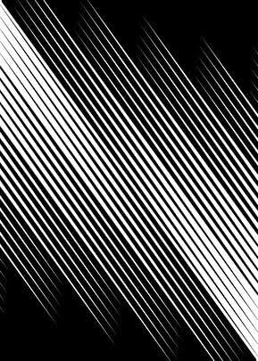

Desain web statis merupakan proses pembuatan tampilan website yang memiliki isi dan struktur relatif tetap, seperti teks, gambar, menu navigasi, dan informasi artikel. Website statis biasanya dibuat menggunakan HTML untuk menyusun konten dan CSS untuk mengatur tampilan. Desain ini cocok digunakan untuk website sederhana yang menyajikan informasi tanpa memerlukan perubahan data secara otomatis dari database.
Kembali